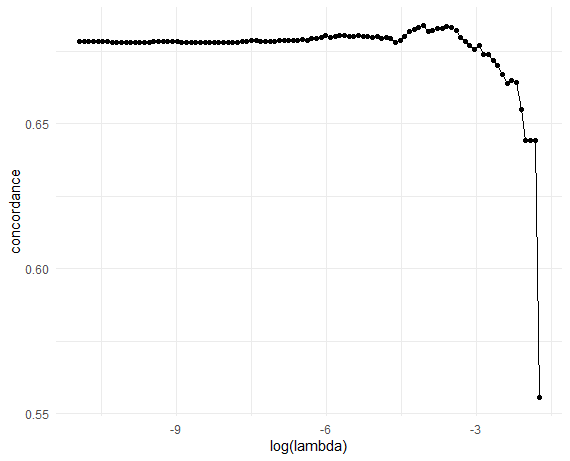
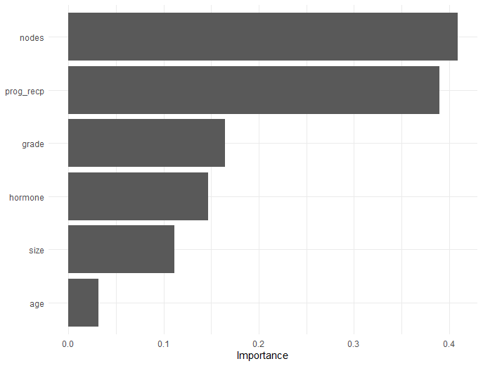
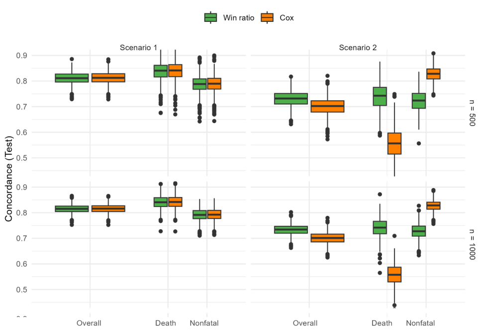
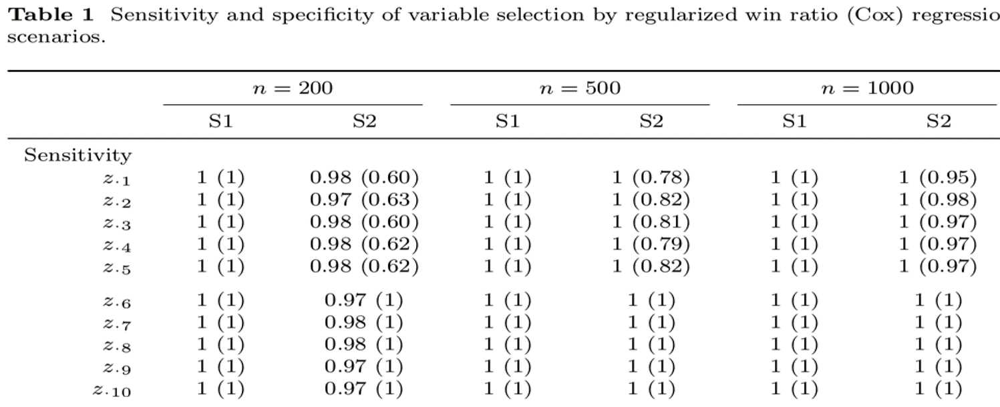
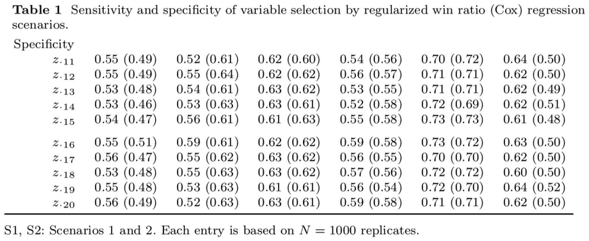
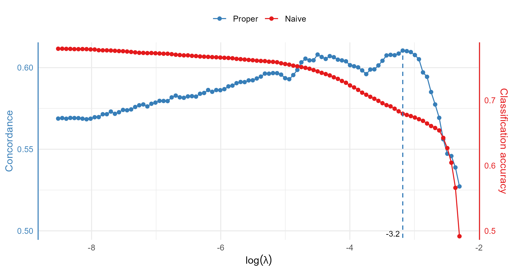
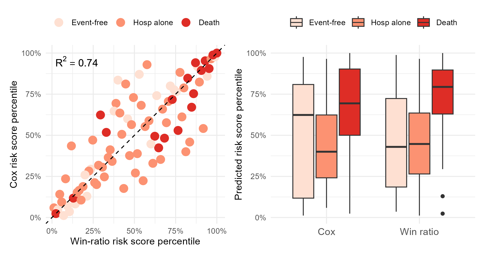
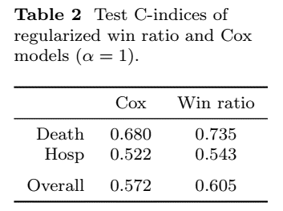
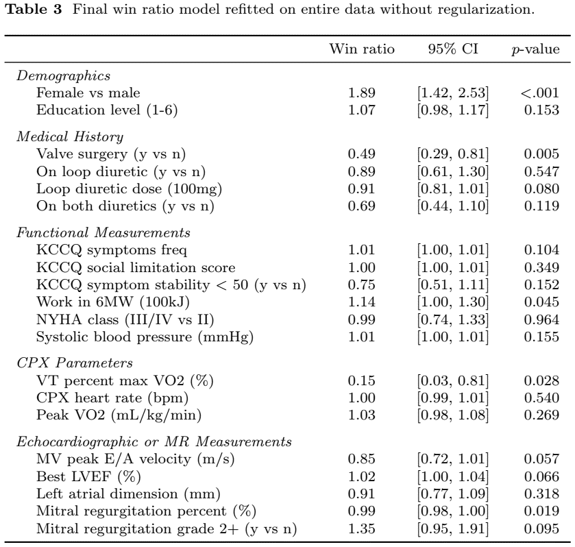

WRNet: Regularized win ratio regressionVariable selection and risk prediction with hierarchical composite outcomes
Department of Biostatistics & Medical Informatics
University of Wisconsin-Madison
\[ \newcommand{\wh}{\widehat} \newcommand{\wt}{\widetilde} \def\bs{\boldsymbol} \newcommand{\red}{} \newcommand{\indep}{\perp \!\!\! \perp} \def\T{{ \mathrm{\scriptscriptstyle T} }} \def\pr{{\rm pr}} \def\d{{\rm d}} \def\W{{\mathcal W}} \def\H{{\mathcal H}} \def\I{{\mathcal I}} \def\C{{\mathcal C}} \def\S{{\mathcal S}} \def\Sk{{\mathcal S}^{(k)}} \def\Skm{{\mathcal S}^{(-k)}} \def\v{\varepsilon} \def\bSig\mathbf{\Sigma} \def\Un{\sum_{i=1}^{n-1}\sum_{j=i+1}^n} \]
WRNet workflowwrnet R packagePathwise algorithm (Friedman et al., 2010)
x: covariate matrix containing \(z_{ij}\) ,y: response vector \(\delta_{ij}\)intercept = FALSE removes interceptlambda: user-specified \(\lambda\) vectorcv.glmnet()
cv.glmnet()Data format
id, time, status, and covariates# Load package containing data
library(WR)
df <- gbc # n = 686 subjects, p = 9 covariates
df # status = 0 (censored), 1 (death), 2 (recurrence)
#> id time status hormone age menopause size grade ...
#>1 1 43.836066 2 1 38 1 18 3
#>2 1 74.819672 0 1 38 1 18 3
#>3 2 46.557377 2 1 52 1 20 1
#>4 2 65.770492 0 1 52 1 20 1
#>5 3 41.934426 2 1 47 1 30 2
#>...wr_split() functioncv_wrnet(id, time, status, Z, k = 10, ...)# 10-fold CV -------------------------------------------
set.seed(1234)
obj_cv <- cv_wrnet(df_train$id, df_train$time, df_train$status,
df_train |> select(-c(id, time, status)))
# Plot CV results (C-index vs log-lambda)
obj_cv |>
ggplot(aes(x = log(lambda), y = concordance)) +
geom_point() + geom_line() + theme_minimal()
# Optimal lambda
lambda_opt <- obj_cv$lambda[which.max(obj_cv$concordance)]
lambda_opt
#> [1] 0.0171976
Fit final model
wrnet(id, time, status, Z, lambda = lambda_opt, ...)# Final model ------------------------------------------
final_fit <- wrnet(df_train$id, df_train$time, df_train$status,
df_train |> select(-c(id, time, status)), lambda = lambda_opt)
final_fit$beta # Estimated coefficients
#> s0
#> hormone 0.306026364
#> age 0.003111462
#> menopause .
#> size -0.007720497
#> grade -0.285511701
#> nodes -0.082227827
#> prog_recp 0.001861367
#> estrg_recp . 
test_wrnet(final_fit, df_test)






wrnet: https://lmaowisc.github.io/wrnet/glmnet() backend